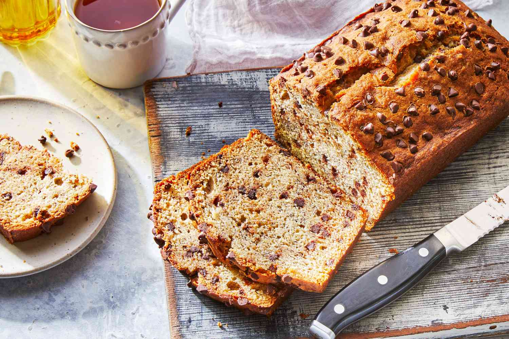

Banana Bread

Banana bread is a sweet bread that is made from mashed bananas. It is typically a squishy and sweet quick bread.
Ingedients
- 2 1/3 cups Overripe Bananas (mashed)
- 1/2 cup Butter
- 1 tsp Baking soda
- 1/4 tsp Salt
- 3/4 cup Brown Sugar
- 2 Eggs (beaten)
- Vanilla extract
- 2 cups All-purpose Flour
Procedures
- Preheat the oven and prepare the pan
- Mash the bananas and add the butter
- Mix in the remaining ingredients
- Bake the bread
- Cool and serve